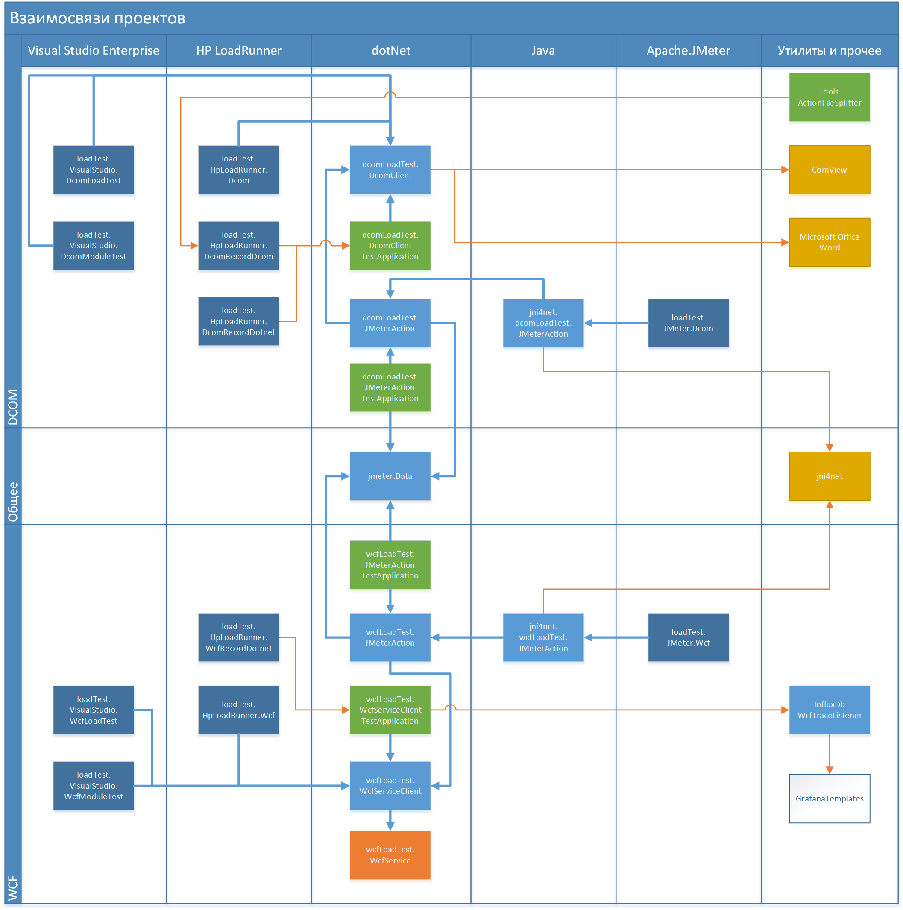
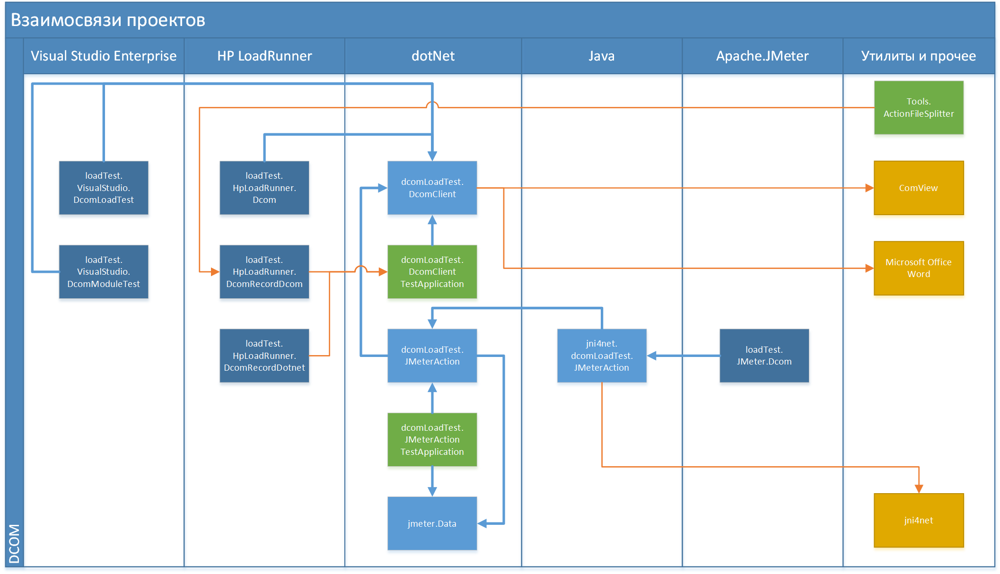
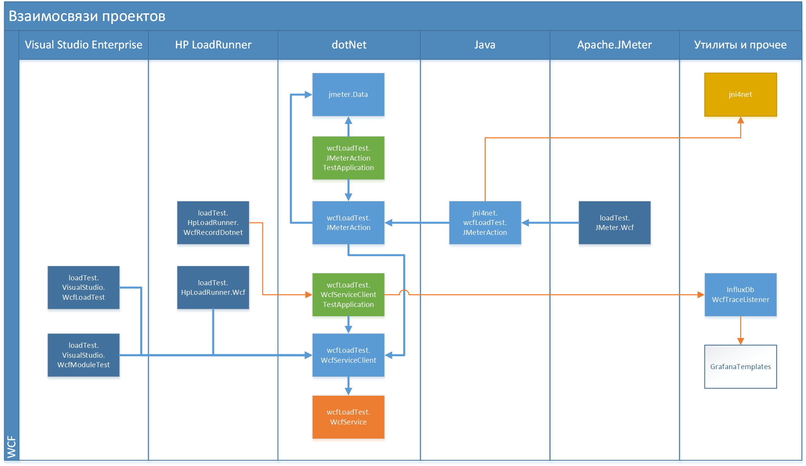

Проект был создан для демонстрации того, что из Apache.JMeter можно подавать нагрузку на DCOM и WCF-сервисы. Причём даже на WCF-сервисы, которые используют в качестве протоколов HTTP Soap/MsBin1 или net.tcp.
Первоначальная задача была в том, чтобы показать, что Apache.JMeter достаточно удобный инструмент.
Вторая задача в создании учебного примера, демонстрирующего различные подходы для разработки нагрузочных тестов для DCOM и WCF с использованием трёх популярных инструментов нагрузочного тестирования:

Логические части проекта:
Состав:
Проекты для теста DCOM:
Проекты для теста WCF:
Документация и общие проекты:

Это сторонний продукт из состава Microsoft Office.
DCOM-сервисом является приложение Microsoft Office Word, локально установленный. Предполагается, что он установлен и зарегистрирован на нагрузочной станции. Это приложение не является частью проекта.
DCOM-сервис используется:
Это сторонняя утилита. В составе исполняемый файл и файл справки. Сайт проекта: http://www.japheth.de/COMView.html. В данный момент сайт неактивен, но доступен по ссылкам из проекта archive.org.
Если нужно зарегистрировать или разрегистрировать другой DCOM-сервис, то может пригодиться утилита ComView. Приложение хранится в папке tools.ComView.
От утилиты напрямую не зависят другие части проекта. Утилита является вспомогательной.
Для взаимодействия с DCOM-сервисом из dotNet-среды, создан проект клиента на C#. В данном случае, это обёртка нам методами DCOM-сервиса, предоставляемого Microsoft Office Word. Проект хранится в папке DcomLoadTest.DcomClient.
Клиентская библиотека DcomLoadTest.DcomClient используется:
Для проверки того, что проект DcomLoadTest.DcomClient работает и взаимодействие с Microsoft Office Word осуществляется корректно создано тестовое консольное приложение на C#. Проект приложения хранится в папке DcomLoadTest.DcomClientTestApplication.
Приложение DcomLoadTest.DcomClientTestApplication также используется для демонстрации работы Recorder-а в HP LoadRunner Virtual User Generator. Схема взаимодействия такая - Virtual User Generator запускает тестовое приложение DcomLoadTest.DcomClientTestApplication, перехватывает его вызовы dotNet-методов или DCOM-запросы и ответы и формирует заготовку нагрузочного скрипта.
